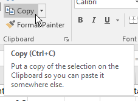

Spreadsheet calculations
Today we will work with formulas and functions in Excel. Since the operations we're able to do depends on the data types we are working with, we will begin by spending some time learning how Excel handles data types.
1. Data types in spreadsheets
In MS Access, we had to assign data types to entire fields (i.e. columns) in tables, and once a field's data type was set anything entered in that field was treated as that type of data - numbers entered in a text field would be interpreted as text, and text entered in a numeric field would produce an error message.
Excel does not treat columns as fields, and we do not assign data types to columns. However, Excel does assign data types at the level of individual cells. This makes data entry in Excel extremely flexible, because a single column can have mixes of labels and numeric data values in whatever combination we want. As we learned the first week of class, we are able to organize our data any way we want, for better or worse, because of this flexibility.
Excel assigns the data type automatically when you enter a cell value - generally, we do not manually set the data type of a cell. Most of the time Excel chooses well, but sometimes it misjudges the data type that we want and we need to make an adjustment. Because the data type assignments are done automatically, we need to watch for these mistakes.
The main distinction you should be aware of between data types in Excel is between numbers and text. Percentages and date/time entries are special cases of numeric data, and understanding how they are entered and stored is important as well.
Converting between text and numbers
Excel is pretty good at making the distinction between text and numbers, and it recovers from mistakes easily. For example, if you make the mistake of entering the units of measure when you enter data (that is, entering 50 g instead of just 50), Excel will treat the cell as text because of the g. But, once you realize your mistake you can delete the g and Excel will convert the entry back to a number automatically.
Once in awhile you may find that values that are meant to be numbers are being treated as text by Excel - this can happen either because of a problem importing a file, or because the cells contain a function that produces text output from numeric inputs. Excel will not automatically convert from text to numbers if you try to do math with cells it considers to be text, and you'll either get an inaccurate result or an error message.
There are a few ways to convert values from text to numbers.
A. Download this file and save it to folder
H:/biol365/ex4_formulas. Open the file in Excel, and in the first sheet, "Text to numbers", you'll find a column
of data that is currently treated as text by Excel. The first tipoff that this is true is that the data are
left-aligned in the cell, which is the default for text, whereas numbers are right-aligned by default. Each cell
also has a little green triangle in the upper left corner, and if you select a cell it pops up a little warning
message telling you that the numbers are currently
formatted as text - this is a common enough problem that Excel recognizes it and warns you of it. If you click
on the warning sign you'll see that one of your options is to convert the cell to a number. This is fine, but it
requires that you make the change manually, one cell at a time. Too much work, especially with larger data sets.
telling you that the numbers are currently
formatted as text - this is a common enough problem that Excel recognizes it and warns you of it. If you click
on the warning sign you'll see that one of your options is to convert the cell to a number. This is fine, but it
requires that you make the change manually, one cell at a time. Too much work, especially with larger data sets.
You'll now learn three different ways to convert numbers from a text data type to numeric data, which can easily be applied to large numbers of data values.
B. In cell B1 type "Value function". In B2 type =value(a2) - this will convert the cell from text to numeric, and put the result in cell B2. Copy and paste this cell to the rest of the cells in B.
C. In cell C1 type "Add 0". In C2 type =a2 + 0. This will cause Excel to first convert the number in a2 from a text data type to a number, then add 0 to it. The result is a converted variable type. Copy and paste this formula to the rest of the cells in C.
D. These first two approaches work fine, but they both enter formulas into the cell instead of entering data. If you now deleted column A to get rid of the improperly formatted data, the cells in column B and C would all show an error ("REF!"), because the cells they point to are missing. You can copy the cells and do a "Paste special" with the "Values" to convert them to numeric data permanently. Or, you can use Paste special to do the conversion for you in the first place and skip a step.
In cell D1 type "Paste special". Copy all the data from a2 to a11, select cell D2 and right-click. Select "Paste special", and then at the bottom of the context menu select "Paste special" again. In the window that pops up select "Add" as the "Operation". This option adds the value of the cells you copied to the cells you are pasting them into - since the cells you are pasting to are all blank, this will have the same effect as adding 0 did in column C. But, this method has the advantage that the pasted cells will automatically be entered as data instead of being formulas.
Important warning about this last method - you can only use it if you are pasting into blank cells. If you are pasting over cells that already contain some numeric data the cells you're pasting will be added to the existing cell values that are already there.
Special cases of numeric data - dates and percentages
We will now move on to two special cases of numeric data - percentages, and date/time entries. Both of these numeric data types are converted by Excel when they are entered into a numeric form that is stored internally that is different from what is displayed. Because of this what you enter isn't what is stored, and what is stored isn't what is displayed for these data types.
Percentages
Switch to the "DateTimePercentage" sheet for the next two sections on percentages, dates, and times.
Regardless of how you enter them, percentages are stored by Excel as proportions - 100% is stored as 1, 50% is stored as 0.5, and so on. When Excel displays them, it moves the decimal over two places to the right and displays a % sign after the number.
This is actually an example of a more general principle about numbers in Excel: the value stored in a cell and the value displayed by Excel can be different. If you think about it we have already seen this several times - we know every number is a floating point number with 15 decimal places of precision, but when you enter a 1 it is displayed as a 1, not as 1.00000000000000. We have to make a distinction between a cell's value and it's display type.
Any number entered can be displayed as a percentage by setting its display type, using the "Number format"
drop-down, like
this . Dropping the menu down and selecting
"Percentage" will cause any selected numeric cell to be displayed as a percentage (including numbers that are
not supposed to be percentages!). Excel will assume the number in the cell is a proportion, and will make the
translation to percentage accordingly.
. Dropping the menu down and selecting
"Percentage" will cause any selected numeric cell to be displayed as a percentage (including numbers that are
not supposed to be percentages!). Excel will assume the number in the cell is a proportion, and will make the
translation to percentage accordingly.
- Try this out - in cell A1 of worksheet "DateTimePercentage" enter the label "Entering 0.5, setting display to Percentage", and in A2 enter the value 0.5. Then drop the display type menu down and select "Percentage". You should see your entry of 0.5 is now displayed as 50%.
Changing the display type on data that are already in the worksheet does not change the data values, it only changes the way that Excel interprets the cell contents.
In contrast, when you enter new values as percents, Excel converts the value you type in to a proportion, and sets the display type to Percentage so that it displays correctly. For example, entering 50% will cause Excel to convert the number to 0.5 for storage, and to set the display type to Percentage for that cell.
- Try this out - enter the label "Entering 50%" into cell A4, and in A5 enter 50% (with the percent sign). You will see that the entry shows as 50%, and the display type automatically changed to "Percentage". If you manually set the display type to "General" you will see that the number actually recorded by Excel is 0.5. Set the display back to "Percentage" before you go on.
If you are entering a large number of percentages and want to save yourself the trouble of typing a % at the
end of each one, you can set the display type to Percentage for empty cells, and then Excel will assume that any
number you enter is a percent - it will do the same conversion as if you had actually entered the percent sign.
- Try this out - enter the label "Setting Display to Percentage, entering 50" in cell A7. Select A8 and set the (empty) cell's display type to Percentage. Then, enter the number 50 (without the %) into cell A8. You'll see that Excel interprets this as an entry of 50%, even though you didn't use the percent sign.
What you don't want to do is mix these approaches, by setting the display type to Percentage and then entering the proportion equivalent to the percentage you actually want to enter.
- Try this out - enter the label "Setting Display to Percentage, entering 0.5". Select cell A11, set its display type to Percentage. Now enter 0.5 as the proportion that corresponds with 50%. You'll see that Excel interprets the entry as 0.5% (which as a proportion is 0.005), instead of 50% as intended.
It's important to get this right, because we want to be able to do math on the data and get the right answer (when we multiply 20 by 50% we want the answer to 10, not 1000).
Date and time
Dates and times are another example in which what we enter is converted to a numeric representation internally, which is then formatted for display. Dates and times are an even more extreme case, because we can enter a date in one format, which is converted to a number for storage, and is then presented as a mix of numbers, letters, and symbols for display.
A. Continuing in the worksheet "DateTimePercentage", in cell F1 type "Dates". In cell F2 type =today(). This function takes no arguments, and will insert today's date into the cell - note that if you see a series of pound signs when you hit enter, #####, this is Excel's way of telling you that the column is too narrow to display the contents. Widen the column and you'll see today's date displayed in F2. You will continue to see =TODAY() in the formula bar if you select F2, but today's date will be displayed in the cell (like so).
In cell F3 type the first day of 2017 as 1/1/17. Even though the slash character, /, is used to indicate division in a cell formula, Excel will interpret this as a date instead of a calculation because there is no = sign in front, and will convert your input to 1/1/2017. It should be obvious that Excel recognized this entry as a date and converted it, because it isn't displaying what you entered - the 20 in 2017 wasn't there in your original entry.
B. Because the dates are stored as numbers, we can do math with them. For example, if you enter =F2-F3 in cell F4 you will calculate the difference between today and Jan 1 of this year. The result is the number of days elapsed between the first of the year and today (if you see a date instead of an integer number, you can change the display format for cell F4 to "General").
C. Currently, the values in F2 and F3 are being displayed as a date/time data type (select the cells and check the display type to confirm this).
Just like with percentages, you can change the display type to something else - select cell F2 and change its display type from "Date" to "General". You'll see that the date is now showing as a number, which represents the number of days since the "epoch" that Excel uses as the baseline for recording dates.
You can see what the epoch is by entering 0 in cell G2, and then changing its display format to "Short Date". Label this by writing "Epoch" in cell G1.
Note, then, that what Excel is actually doing is converting anything it believes to be a date into a "Days since Epoch" numeric form, and then formatting this number for display to the screen as a date. This means you can go the other way, as well - if you enter the number 12345 into cell G3 and then change G3's display type to Short Date, you'll see the number displayed as the date 10/18/1933. Changing the display type didn't change the underlying number, it just re-interpreted 12345 as a date for display purposes.
D. Enter the current time in cell H2 by entering the function =now(), which will place the current date and time in that cell. Time is stored in Excel as a proportion of the day elapsed - so, for example, 12 noon is exactly halfway through the day, so the time is stored as the number 0.5, and at 6 pm 18 out of 24 hours have passed, which is 18/24 = 3/4 = 0.75, so Excel stores the number 0.75 for the time. The combined date and time for 12 noon on 1/1/2017 would be 42736.5. To see the underlying number for the date and time in cell H2, change the displayed format to "General".
A date that is entered without a time has 0's as decimal values, which would be interpreted by Excel as midnight, which is 12:00 AM. This can be a problem if you don't realize that no time was entered - it would be better if a missing time entry was treated as no data, but because of the way times are represented this isn't the case in Excel.
E. Enter the time 12:00 in cell H3. Just like we used a slash (/) to indicate we were entering a date, using a colon in an entry indicates to Excel that we are entering a time of day. Excel interprets 12:00 as noon, which you will see in the formula bar if you select H3 - it will show 12:00:00 PM, even though you entered just 12:00. Since you didn't enter a date, Excel assigns a 0 for the number of days since the epoch - you can see this by changing the format of H3 to short date, which will show you a date of 1/0/1900 (there is no zeroth of January, so you can interpret this as "date not entered").
You can enter times either on a 24 hour clock (14:00 is 2 pm, 18:00 is 6 pm, etc.), or you can use am and pm along with the times. If you use am and pm you don't need the colon, Excel will recognize that you're entering a time without it (2 am, 2 pm, etc.)
Entering date and time data in Excel - some advice
If you were collecting data on both dates and times, how should you enter them in Excel? Since Excel treats date and time as part of a single number that it stores, it is tempting to enter date and time together in the same cell. For example, if you wanted to enter an observation that was made on 1/1/2016 at 1:12 PM, you could enter this as:
1/1/16 1:12 PM
and Excel would convert it to the number 42370.55 internally, and format it for display as 1/1/2016 13:12.
This is compact, but all the punctuation and spacing has to be done right, and would probably lead to lots of data entry errors.
It might be better to have a column for Date and a separate column for Time, and enter the dates as:
1/1/16
and the times as:
1:12 PM
This will give you a number of 42370.0 in the Date column, and a number of 0.55 in the Time column. Data entry would be easier and less error-prone, and if you want to combine date and time into one number later, you would just need to add the dates to the times.
F. We can do math on times as well as dates. Class started promptly at 5:30 pm on 10/4/2017, so in cell F7 write the label "Start of class", and in F8 enter the date as 10/4/17, and in G8 enter the time as 5:30 pm. Then, in cell F9 enter =f8+g8, and you will see the Excel display 10/4/2017 5:30 PM.
In cell F11 write the label "Time since start of class". In cell F12 write =H2 - F9.
The time since start of class in cell F12 is in days, and we aren't used to thinking about time as a fraction of a day. To convert to seconds we need to multiply this fraction of a day by the number of seconds in a day. There are 60 seconds in a minute, 60 minutes in an hour, and 24 hours in a day, so the number of seconds in a day is 60*60*24.
In cell F14 write the label "Seconds since start of class", and in cell F15 enter:
= f12*60*60*24
Note that Excel updates functions every time a worksheet recalculates, so the now() function will update each time you enter or change a value in a cell. You can re-calculate a worksheet manually by hitting the F9 function key.
G. Keep an eye out for Excel's mistakes! Excel has to make a judgment about the data type you are entering for every cell you enter, and it can guess wrong.
Say, for example, that you are entering names of genes into Excel, and you come to the gene that encodes the "deleted in esophageal cancer 1" protein, which is abbreviated as DEC1. Enter the name of the gene, DEC1, into cell F18 - you'll see that Excel helpfully converts the label DEC1 into the date 12/1/17. In cell F17 write "Data type error". You can force Excel to treat your input as text, instead of converting to a date, by using an apostrophe in front of the text - so, in cell A18 type 'DEC1, and you'll see the conversion to date is prevented.
A potential source of trouble: importing data
Sometimes you will be generating data from an online database, or in another desktop program, and will want to import the data into Excel for analysis. Depending on the format of the file, you may find that Excel interprets things differently than you want it to, and the fact that data types are assigned at the level of the cell means that a cell in the middle of a list of gene names may suddenly get interpreted as a date.
Percent, Proportion, Percent Number, Date number, Date, Gene name
3.31%, 0.0331, 3.31, 42736, 1/1/17, ABCC6
52.45%, 0.5245, 52.45, 42737, 1/2/17, DCTD
68.46%, 0.6846, 68.46, 42738, 1/3/17, DEC1
62.78%, 0.6278, 62.78, 42739, 1/4/17, TLR6
19.65%, 0.1965, 19.65, 42740, 1/5/17, CCNG2Consider the short section of a "comma separated values" (CSV) formatted text file, in the box to the left. CSV is a popular import format that uses commas to separate columns in a data file. You'll see that some of the entries (like "Percent" and "Date") are formatted in a way that will prompt Excel to judge the data type, and do the conversion to percentage or date as needed. We also have two columns (Proportion and Date number) that Excel will import as numbers without any conversion, but since the numbers are in a format that Excel can interpret as percentages or dates, respectively, we can change the display type ourselves afterward.
The entries we have to watch for are gene names, because Excel will interpret all of the names correctly as text, until it gets to DEC1 in the third row. Excel will decide that DEC1 is a date, even though everything else in the column is text.
We can confirm this is the case by downloading the file, and importing it as a worksheet.
1. Once the file is downloaded (by right-clicking and saving the link as a file), use "File → Open" to find the file and open it (it's called "format_challenges.csv"). You'll see that, as predicted, Excel interpreted the Percent column as percent (but not Proportion or Percent Number), interpreted Date as dates (but not Date number), and it decided that we meant for DEC1 to be a date, even though it is embedded in column full of text.
Close the file but don't save the changes (Excel will write the incorrectly interpreted date over the actual gene name if you save).
We can prevent this interpretation problem if we import the CSV file as an external data set - this will cause Excel to run the file through its "Text Import Wizard", which allows us to set the column type during import.
2. Switch to your ex4_data spreadsheet, and select the "Data" tab. The left-most block of buttons are labeled "Get External Data", and one of the buttons is labeled "From Text" - click on this button, then do the following:
- Find the file "format_challenges.csv", and select it in the "Import Text File" window. Click "Import".
- You will now be presented with a "Text Import Wizard - Step 1 of 3" window. This is where you give Excel instructions about how to import the data. Make sure "Delimited" is selected, since our columns are indicated by a symbol (a comma). Go to the next step.
- In step 2 of 3, you have to tell Excel that the delimiter you are using is a comma - un-check "Tab", and check "Comma".
- In the third and final step, select the "Gene name" column, and set it to a "Column data format" of "Text". This tells Excel that regardless of what the entries in this column appear to be, you want all of them to be treated as text.
- Next you will be prompted for whether you want the data to be imported into an existing worksheet, or into a new worksheet - select "New worksheet".
When you finish the import, you'll see that you now have a correctly formatted DEC1.
The take-home message of this section of the exercise is that Excel does have data types. When you enter data into a cell Excel decides the data type it thinks you want, and will actually change what you enter into the internal representation it uses for that data type, and then change the display type to show you what it thinks you meant to enter. This is fine most of the time, but there are cases in which what you wanted to enter and what Excel thinks you wanted to enter are different, and you need to be aware of these cases so you can avoid having Excel introduce errors into your data.
2. Cell formulas
Formulas are entries in cells that perform some sort of operation, rather than holding text, numbers, or date values. You have been using them already, every time you enter an = followed by cell references, arithmetic operators, or functions. Functions are built-in routines that return a value of some kind. We have used these too, when we used =now() to get the current time, =value() to convert text to numbers, and =today() to get the date and time. So, at this point you have a little experience using formulas and functions, but now you will learn a little more about how they work, and how you can use combine them together to do complex computations in a single cell.
Formulas and functions usually work on the contents of cells, which we do by using reference to the cell in our formula or function. Cell references can be either relative or absolute.
Relative cell references
Relative cell references point to cells relative to the position of the cell that holds the formula. Consider the simple example here:

When the formula is first entered in cell C2, the column and row reference for the length is entered, and then is multiplied by the column and row reference for the width. Although we enter a specific column and row, Excel interprets A2 to mean "the cell in the same row as me, but two columns left", and it interprets B2 to mean "the cell in the same row as me, but 1 column left".
You've already used relative references today when you converted text to numbers with the value() function. Look at the formulas in columns B, C, and D from the "Text to numbers" sheet, and remember that you entered a formula once in the first row, then copied and pasted it to the rest. When you did this, the row references increased by one for every row down you went, so you only had to enter the formula correctly once. This is VASTLY better than having to type these references yourself, since it cuts out many opportunities for data entry errors.
Working with cells that have relative references
We use relative references when we want references to update to update when we copy and paste a formula to a new location. This is a good time to be clear about what is meant by Copying and Pasting a cell.
To copy a cell you must first select it.
- Selecting a cell is done by left-clicking on a cell once, or moving to the cell using the arrow keys, or by left-clicking once in a cell and dragging across a cell range to be copied. If a cell with a formula is selected you will see the result of the formula in the selected cell, not the formula itself (the formula will show in the formula bar, above the cells in the worksheet).
Copying a selected cell is then done by:
- Right-clicking the selected cell (or anywhere in a selected range of cells) and choosing "Copy" from the pop-up menu.
- Using the keyboard combination CTRL+C
- Clicking the "Copy" button in the button bar in the left end of the "Home" tab.
Pasting a copied cell is done by selecting the cell that will be the destination (if a range of cells were copied then selecting the upper-left corner of the destination range is sufficient), and then:
- Right-clicking and selecting "Paste" from the pop-up menu.
- Using the keyboard combination CTRL+V
- Clicking the "Paste"
button
 in the button bar in the left end of the "Home"
tab.
in the button bar in the left end of the "Home"
tab.
Using the fill handle is equivalent to copying and pasting for cells with formulas. In cell H2 enter the formula =f2, and you'll see the gene name ABCC6 appear in cell H2. Using the fill handle to drag the contents of cell H2 down to cell H3 copies the contents of H2 to He, and you'll see that the relative cell reference now reads =F3.
There are a couple of ways to change the location of a formula without having the relative references update: moving cells, inserting/deleting cells, and copying/pasting the text of formulas.
Moving a cell means to drag it to a new position in the worksheet. To move the formula in cell H3 position your mouse over the margin of the cell until you see the crossed arrows move cursor, . Left-click, hold, and drag the cell down one row to H4, and release it. Because you moved the cell instead of copying and pasting it the relative cell reference is still F3, which is now in the row previous and two columns to the left.
You now have a blank cell at H3. To delete this cell you can:
- Right-click and select "Delete"
- Hit the "Delete" button from the button bar.
Either method will bring up a "Delete" window that asks you if you want to shift cells left, up, or delete an entire row or column. In this case either up or left will work, so keep the default of up. Cell H3 now has the contents of H4, and still points to cell F3.
The reverse of deleting cells is inserting cells - with cell H3 selected, you can right-click and choose "Insert", or click the "Insert" button next to the "Delete" button, and an "Insert" window will pop up - select "Shift cells down", and H3 will be put back in cell H4, with the cell reference still pointed at F3.
It is also possible to copy the text of a formula from within a cell and paste it to a new cell without having the cell references update. Do the following:
- Select cell H4, and then double-click until you see =F3 in the cell instead of DCTD.
- Select the text of the formula, including the = sign, and then use CTRL+C to copy it.
- Hit the ESC key, or click on the "Cancel" button, , to stop editing the contents of the cell.
- Select the destination cell (H5) and paste.
Absolute cell references
Absolute references are pointers to a particular set of cells, that doesn't depend on the location of the formula or function that uses it, and thus does not change when you copy and paste the cell. Absolute references are indicated by a $ in front of the column letter, row number, or both. Where you put the dollar sign depends on what you are trying to do in your formula.
To practice use absolute cell references, we are going to create a "z table", which is a table of probabilities from a normal distribution with a mean of 0 and a standard deviation of 1 (just like the table you used in Biol 215 to calculate normal probabilities). A normal distribution with a mean of 0 and a standard deviation of 1 is called the "standard normal distribution", and it can be used to solve any normal probability problem. When you calculate this table you will also get a chance to use the "normsdist()" function - two birds with one stone! An example of one is here.
A. Switch to sheet "Absolute references". You'll see that column A contains the first two digits of a z-value, and the columns are labeled with the third digit (the hundredths place); z values indicate number of standard deviations from the mean. So, for example, cell C3 will be giving the probability for a z-value with 0.0 as the first two digits and 1 as the third, or z = 0.01.
B. We are going to end up with a calculation that has several parts, including a function that uses a calculation as an argument, all entered in a single cell. This is a compact way of doing things, but it can also be hazardous because you will only be able to see the final result. If you make a mistake in one of the component calculations you'll know the final result is wrong, but you won't know why. So, we'll take this in stages - first we'll combine the row and column labels into the correct z-value, and check that it's right. Then, we'll modify the formula to use the z-value that we know is correct to calculate the probability.
To calculate the z-values, in cell B3 type =$A3+B$2/100. This will give you the z-value for this cell - since the column labels are the hundredths place of the number, we need to divide them by 100, then add them to the row labels (i.e. the ones and tenths places) to get our z-values.
Notice that we used a dollar sign before the column letter for the cell with the first two digits ($A3), and before the row number for for the cell that has the third digit (B$2). When we copy the formula in B3 and paste it to cell C3, we want to continue using the 0.0 in cell A3, but we want to use the third digit in column C - using an absolute reference for the column on $A3 prevents the column from changing, but allowing the column in B$2 to be relative allows it to change as we paste into cells to the right. Likewise, as we paste the formula down the rows, we want the formula to point to the first two digits of the z-value found in the same row as the formula, but to always point to the third digit in row 2 of the column we're pasting into - so, we use an absolute reference to the row number in B$2 to keep it from changing, but not on $A3 so that it can change to the row that the formula is pasted into.
Go ahead and copy the formula in B3 and paste it to the rest of the cells in the table (B3 through K33), and then check to see that this worked right - double-click on a few cells, and when you do check the colored highlighting that points to the cells being used in the calculation. Make sure that each cell is being calculated from the row and column they are in. Right now all we're doing is calculating the z-values, so you should also see that the first row of calculated values are 0.00, 0.01, 0.02, 0.03..., the second row is 0.10, 0.11, 0.12, 0.13..., and so on.
If this all looks right, move on to modifying the formulas to calculate the probabilities.
C. Now that we can see that we're assembling our z-values correctly, modify the formula in B3 to read =1-normsdist($A3+B$2/100). The function normsdist(z) is the "standard" normal distribution function, which has a mean of 0 and a standard deviation of 1. Be sure to include the "s" in "normsdist", as there is also a "normdist" function, but it requires that you specify a mean and standard deviation.
The normsdist function takes just one argument, the z-value that we just calculated. The Excel version of the function gives "lower tail" probabilities, meaning it returns the probability of an observation falling from negative infinity up to the z-value we specify. Our table is set up for "upper tail" probabilities, which are from our z-value to positive infinity. We get upper tail probabilities by subtracting the lower tail probability from 1.
Copy and paste the formula in B3 to the rest of the table (paste over your other formulas, they will be replaced).
D. Set the probabilities to display 4 decimal places. Trailing zeros are dropped by Excel by default, with the number of digits displayed by default determined by the width of the column (you'll probably have six displaying, unless there are trailing zeros). Select the probabilities you just calculated (cells B3 to K33), and click on the "Increase decimals" button. Since the first cell selected, B3, contains the number 0.5, the increase decimal button will take the baseline number of decimals to display from this cell and then add one. The first time you hit the button you'll get 2 decimal places for all the cells. Hit the button two more times to give 4 decimals for every probability, including those like B3 with trailing zeros.
E. Produce a surface plot of the table. We didn't get a chance to make a surface plot last week, but we now have data in the right arrangement to make one, so all you need to do is:
- Select the entire table, including the row and column headings
- Switch to the "Insert" tab
- Find "Other charts", then select "Surface"
You should see a 3-D surface plot with the row labels along the horizontal axis, the column labels along the depth axis, and probabilities along the vertical axis. Colors correspond to ranges of probabilities, and color changes are lines of equal probability.
Nesting functions
To learn how to nest functions in Excel we will turn to data that represents measurements on a circular scale. Circular variables have numbers that repeat, rather than extending to positive and/or negative infinity - examples include directions (measured in degrees or radians), days of the year, and time of day. In each case there is an arbitrary starting point (due north for directions, January 1 for days of the year, and midnight for time of day), and measurements increase until they reach a maximum (360 degrees, December 31, midnight) and then they start again.
You may remember from biostats that variables measured on a circular scale require special mathematical treatment. Even simple operations, like calculating averages, become complicated when working with circular variables.
We introduce circular variables in biostats, but don't learn how to work with them. Now that we're learning how to use Excel to do calculations, this is a perfect opportunity to learn how to handle circular variables in our data.
Direction data
Directions are (relatively) simple circular variables to work with because they are recorded as angles. Due north is at 0 degrees, and numbers increase clockwise - due East is at 90 degrees, due South is at 180 degrees, and due west is at 270 degrees. The numbers increase to 360, which is the same as 0 degrees - thus, north is actually both 360 and 0 degrees.
A classic example of directional data in biology would be data on movement directions in animals. If we took domestic pigeons from their cages, drove due south, and then released them we would expect them to fly north toward home. This would give us directions that are clustered around 0/360 degrees, but because some of the directions are slightly to the west of north (big numbers, near 360) and others are slightly to the east (small numbers, close to 0) their simple average is near 180 degrees, in exactly the wrong direction - you can see this problem in the graph simulating circular data with an average near 0 (clicking "Randomize" gives you a new set of randomly generated directions). We will learn how to calculate average directions correctly to avoid this problem.
1. Switch to worksheet "Nesting functions" and enter the label "Directions" in cell A1.
In cells A2 through A5 enter the numbers 345, 350, 1, and 10 in the first four rows.
In cell A7 type "Simple average", and in cell A8 calculate the average of these numbers with the formula:
=average(a2:a5)
Which gives you a very wrong answer for the mean of 176.5 - nearly due south.
We solve this problem by converting directions into vector components, averaging the components, and then converting them back to an average direction. Understanding the conversion of directions into components requires a little basic trigonometry. To review:
|
We can graph a direction equal to θ as a line segment (the red line a) starting at the origin of the graph and with the tip placed at the direction that's on the compass scale. We can then convert the direction into an x, y coordinate pair by recognizing that the red line segment is the hypotenuse of a right triangle formed with the y-axis as one of the sides. If the origin is at 0,0, then ax is the x-coordinate, and ay is the y-coordinate for the tip of the red arrow at the end of the line segment a. For a right triangle, we know that: sin(θ) = opposite/hypotenuse, which is ax/a. Since we don't have a distance, just a direction, it's convenient to set a to 1, so that sin(θ) = ax. cos(θ) = adjacent/hypotenuse, which is ay/a. With a set to 1, this becomes cos(θ) = ay. |
We can also calculate θ from ay and ax, because we know that:
tan(θ) = opposite/adjacent = ax/ay
Solving for θ is done by taking the arctangent of each side:
θ = atan(ax/ay)
Armed with this knowledge, to get a mean direction we just need to:
- Calculate the sin of each direction to get x-components
- Calculate the cos of each direction to get y-components
- Calculate an average of the x-components (sin's), and an average of the y-components (cos's)
- Calculate atan(average of sin's/average of cos's) to get the mean angle
Simple, no?
2. Calculate the sin of each direction. Excel has a sin() function built in, but it assumes that our directions are in radians, not degrees.
If you remember from your math classes, radians are units of distance around the circumference of a circle that has a radius of 1 (a circle with a radius of 1 is a unit circle). Since circumference of a circle is C = 2πr, when the radius (r) is set to 1 the circumference is 2π.
If you started at 0 degrees and walked clockwise around a compass, like the one to the left, by the time you got to 90 degrees you would have walked 1/4 of the way around the circle. With a circumference of 2π this is equivalent to 2π/4 = π/2 radians.
Continuing the walk, when you arrive at 180 degrees you would have walked halfway, or 2π/2 = π radians.
By the time you arrive at 270 degrees you would have walked 3/4 of the way, or 3(2π)/4 = 3π/2 radians.
When you arrive at 360 degrees you would have walked 2π radians.
So, there is a one to one correspondence between degrees and radians, and we just need to use Excel's radians() to do the conversion for us.
In cell B1 type "Direction in radians", and cell B2 type =radians(a2). You'll get an answer of 6.0213... for the first direction of 345 (which is what you'd expect, since 345 is close to 360, and 2π is 6.28..., right?).
Copy and paste the value from B2 to B3 through B5 - you will now have the directions in radians in column B.
Enter "Sin direction" in C1, and in C2 enter =sin(b2). Copy and paste C2 to C3 through C5 to get the sin of each direction.
Now, this calculation required us to use two columns, one of which did nothing but convert degrees to radians. We don't need to use the directions in radians in later calculations, so we wouldn't lose anything by doing this unit conversion "on the fly", as part of the sin() calculation.
To do the conversion to radians on the fly, we just need to nest the radians() function inside of the sin() function. Enter "Sin direction nested" into cell D1, and in D2 enter =sin(radians(a2)). Copy cell D2 to D3 through D5.
You'll see that the numbers in column D and column C are the same, so we were able to do the calculation without needing a column for the unit conversion.
3. In cell E1 enter the label "Cos direction", and then enter a formula that will take the cos of each direction, by nesting radians() inside of the cos() function.
4. Now we need to calculate averages for the sin and cos components of the direction. In cell D7 enter =average(d2:d5) to get the average of the sin column. Copy and paste this to E7 to get the average of the cos column.
You should get a mean for Sin direction of -0.0603 and for Cos direction of 0.983847.
5. To get the mean angle, we need to take the arctangent of the average of the sin's divided by the average of the cos's. Just like sin() and cos() expect radians, atan() will produce an answer that is in radians as well, so we need to use the degrees() function to convert it back. We can nest the atan() function inside of degrees() to get the answer in degrees.
In cell A10 type "Correct average", and in cell A11 type =degrees(atan(d7/e7)).
This should give you an answer of -3.50726
Note that the arctangent function doesn't give a unique solution for all possible combinations of sin and cos, so the final step is:
- If sin(θ) and cos(θ) are both positive, then the answer is already the mean angle.
- If cos(θ) is negative, then the mean angle is the answer plus 180 degrees (it doesn't matter what sin(θ) is)
- If sin(θ) is negative and cos(θ) is positive, the mean angle is the answer plus 360 degrees.
In our case the mean sin direction was negative and the mean cos direction was positive, so edit the function in A11 to read =360+DEGREES(ATAN(D7/E7)) = 356.49, which is right where it needs to be, close to 0/360.
Time of day - optional, for the curious
Time of day is also a circular variable, like direction, but it has the added complication that the units are in hours and minutes, rather than in degrees (or radians). We will need to use the same trick of converting times to x and y components, but we will first have to figure out a way to convert time into radians.
|
To begin - if the times that four babies were delivered in a hospital were 11:15 pm, 11:59 pm, 12:30 am, and 1:15 am, what is the average time they were born? We can visualize the problem more easily by expressing the times on a 24 hour clock, with the birth times at 23:15, 23:59, 00:30, and 1:15. On a 24 hour clock it's clear that time is a circular variable, and that these birth times cluster around midnight, with two birth times before midnight and two after. Just like we had with the direction data, we have a circular variable with values that are distributed on either side of the point at which the numbers reach their maximum and start over. If you took a simple average of the birth times, the babies born before midnight and after midnight will produce an average time around 12:00 - as before, very wrong. What to do? |

{kind=link}
{kind=link}
{kind=link}
{kind=link}
1. First, we need to enter the data. Enter the label "Birth time" in cell I1, and then in cells I2 through I5 enter the birth times. Use the 24 hour clock, and make sure you enter the time for half past midnight (12:30 am) as 00:30. The reason this matters is that if you enter the time as 24:30 it will cause Excel to also assign a calendar date of 0 (which is the epoch date of 1/1/1900). Even though 00:30 and 24:30 are the same time of day, and we would get the same answer regardless of which we used, entering 00:30 doesn't cause Excel to attach an incorrect date to the entry - entering inaccurate data, even if you don't plan to use it for anything, is a bad idea and should be avoided.
Once you have the times entered, you can see that Excel interpreted them correctly as times by checking the formula bar - they will display as a time with an AM or PM as appropriate (even though you didn't enter them with AM or PM).
If you switch to the Home tab and set the number format to General, you'll see that the times are all displayed as proportions of the 24 hours in a day. The times that are just before midnight are over 0.95, and the ones that are just after midnight are less than 0.1.
We'll calculate the average incorrectly first, as we did for directions, so you can see that all this effort is needed to avoid a mistake - in cell I10 type "Simple average", an in I11 type =average(i2:i5). Set the format to "Time", and you'll see that the simple average tells us the babies were born about 14 minutes after noon, which is exactly wrong.
2. Now to do it right - we'll calculate the sin's first. The time numbers are already proportions of a 24 hour day, and 24 hours of time elapsing is equivalent to 2π radians. To convert time to radians we just need to multiply the time by 2π.
Enter "Sin time" in J1, and in J2 enter the formula =sin(i2*2*pi()). The calculation within the sin() functions parentheses is doing our unit conversion from hours to radians, and then is passing the converted value to the sin() function to produce the answer. Copy and paste J2 into the rest of the rows to get sin's for the rest of the times.
Calculate the average of sin's in cell J7.
3. Calculate the cos's next. Enter "Cos time" in K1, and then calculate the cos of time for the first birth time in K2 (use the same conversion, but this time nest it inside of the cos() function).
Calculate the average of the cos's in cell K7
4. To get the correct average, enter "Correct average" in cell J10, and =atan(j7/k7) into J11, which will give you a value of 0.064341. Since both the sin and cos averages were positive we don't need to add anything to the result to get the right answer.
So, this is the correct average for the times, but it's in radians instead of time. Let's think through what we need to do to get it back into time units:
- Excel represents times as proportions of a 24 hour day, so we need to express this result in radians as a proportion.
- A full trip around the circle is 2π, so to convert our value of 0.064341 from radians to a proportion, we just need to divide by 2π
Edit the formula in J11 to read =atan(j7/k7)/(2*pi()). This is now the average time expressed as a proportion, and it should equal 0.01024....
To see what time of day this proportion is equivalent to, select cell J11 and set the number display to Time - you'll see the average birth time is 12:14:45 AM, or 14 minutes 45 seconds after midnight.
Assignment
That's it! Save your worksheet and upload it to the course web site.